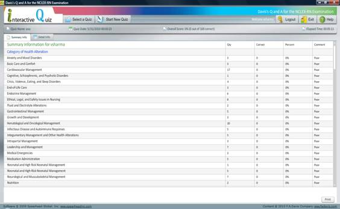
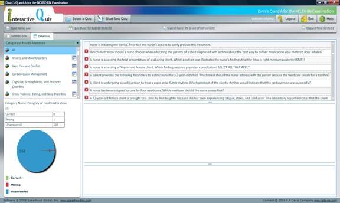

Grade Quiz Page
Any time after starting a quiz, you can choose to grade it. The grade report is divided into 2 screens:
· Summary Info
· Detail Info
The Summary Info page will list your total score as well as your score for each of the categories and sub-categories available. The Summary Info will also indicate the time and date the quiz was taken as well as the elapsed time. You will have the option to print your score report. You can access this display by clicking Summary Info.

The Detail Info screen will provide a graphical display of your results as well as allow you to view the question, your answer, the correct answer, as well as any feedback for every question in the quiz. You can choose to view all of the questions or only those questions related to a particular category or sub-category.

In addition, you can choose to take another quiz related to a particular sub-category. To do so, click the icon next to the given sub-category and choosing any of the options from the list that appears. This allows you to focus on areas in which you did not score well or on areas for which you would simply like to see more questions.